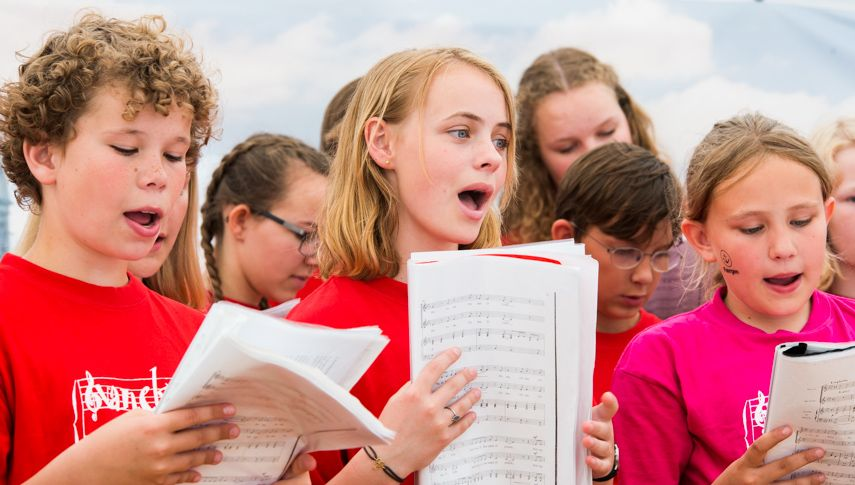
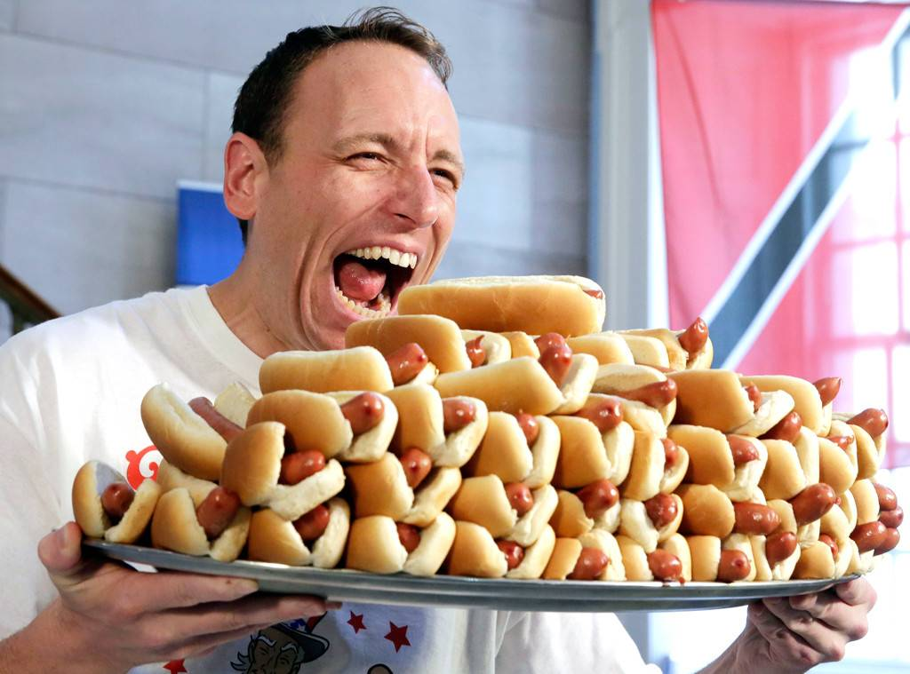
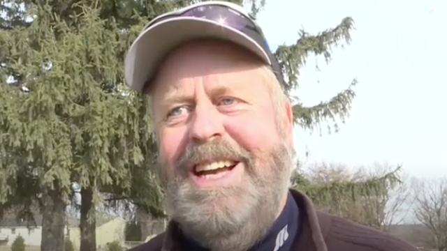

Langeskov kræmmermarked afholdes hvert år for, det har det faktisk gjort lige siden 1988. Kræmmermarkedet er for alle, du skal bare være til sjove stunder,god musik og lækker grillmad
Program 2019
Klik på overstående folder, og få et overblik over programmet forLangeskov Kræmmermarked 2019. Programmet kan med fordel printes ud.
Print program
Det tager kun 9 minutter
...at komme fra Odense til Langeskov. Klik her for at få en overblik over de togafgange, som du kan tage under kræmmermarkedet. Se togafgange
Praktisk information
Ved at klikke her, får du besvaret alle praktiske og oftest stillede spørgsmål. Ligger du stadig inde med et spørgsmål, er du
mere end velkommen til at udfylde kontaktformularen nederst på sitet. Ofte stillede spørgsmål


Derfor vender vores gæster tilbage
"Jeg har været en del af Langeskov Kræmmermarked siden start. Det er blevet til
en tradition blandt venner og familie, som vi ikke har i sinde at stoppe med, at deltage i.
Jeg har min egen stand, hvor jeg gennem årene har lært en masse nye mennesker at kende."
Henrik, 61 år
"Jeg var med for første gang som frivillig i 2015. Lige siden da, har jeg været frivillig, og
har tænkt mig at blive det lige så længe jeg kan. Det fedeste ved Langeskov
Kræmmermarked er helt klart de nye venskaber og relationer man får med sig."
Anna, 25 år
"Jeg var til Langeskov Kræmmermarked for første gang for to år siden med min
klasse. Det var rigtig hyggeligt, så nu tager vi afsted hvert år. Det var ret fedt, at der var
FIFA turnering i år, håber det er der til næste år også."


Kasper, 16 år